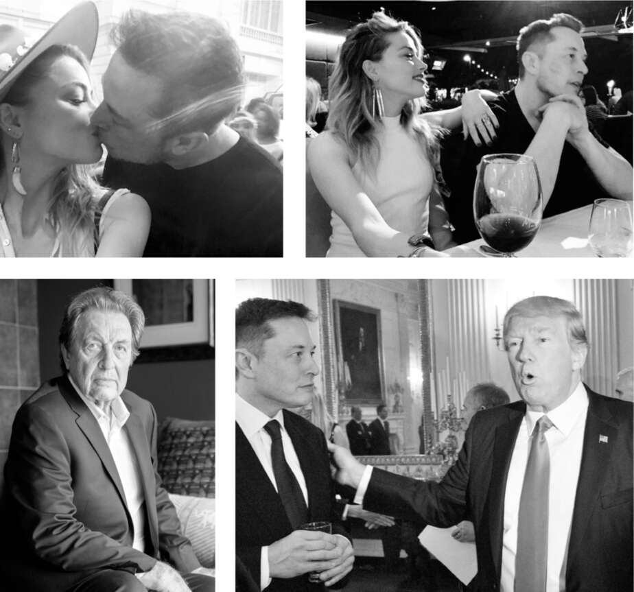

Trump
Musk chưa bao giờ quan tâm nhiều đến chính trị. Giống như nhiều người làm công nghệ, ông theo chủ nghĩa tự do về các vấn đề xã hội nhưng lại có chút gì đó chống đối các quy định và tính đúng đắn chính trị. Ông đã đóng góp cho các chiến dịch tranh cử tổng thống của Barack Obama và sau đó là Hillary Clinton, và là người thẳng thắn chỉ lỗi Donald Trump trong cuộc bầu cử năm 2016. "Ông ấy dường như không có kiểu tính cách phù hợp để đại diện cho Hoa Kỳ", ông nói với CNBC.
Nhưng sau khi Trump đắc cử, Musk bắt đầu thận trọng lạc quan rằng ông ta có thể sẽ điều hành đất nước như một người độc lập nổi loạn hơn là một người cánh hữu đầy oán giận. "Tôi đã nghĩ rằng có lẽ một số điều điên rồ mà ông ấy nói trong chiến dịch tranh cử chỉ là diễn xuất và ông ấy sẽ có cách tiếp cận hợp lý hơn", ông nói. Vì vậy, theo lời thúc giục của người bạn Peter Thiel, một người ủng hộ Trump, Musk đã đồng ý tham gia một cuộc họp của các CEO công nghệ với tổng thống đắc cử tại New York vào tháng 12 năm 2016.
Sáng hôm diễn ra cuộc họp, Musk đã đến thăm ban biên tập của tờ New York Times và Wall Street Journal, sau đó, vì giao thông tắc nghẽn, ông đã đi tàu điện ngầm tuyến Lexington đến Tháp Trump. Ngoài Thiel, hai mươi CEO công nghệ tại cuộc họp bao gồm Larry Page của Google, Satya Nadella của Microsoft, Jeff Bezos của Amazon và Tim Cook của Apple.
Sau đó, Musk ở lại gặp riêng Trump. Trump nói một người bạn đã tặng ông một chiếc Tesla, nhưng ông chưa bao giờ lái thử. Điều này khiến Musk ngạc nhiên, nhưng anh không nói gì. Trump sau đó tuyên bố rằng ông "thực sự muốn NASA hoạt động trở lại". Điều này càng khiến Musk khó hiểu hơn. Anh khuyến khích Trump đặt ra những mục tiêu lớn - đáng chú ý nhất là đưa con người lên Sao Hỏa - và để các công ty cạnh tranh để thực hiện chúng. Trump có vẻ ngạc nhiên trước ý tưởng đưa người lên Sao Hỏa, rồi nhắc lại rằng ông muốn "NASA hoạt động trở lại". Musk thấy cuộc gặp gỡ kỳ lạ, nhưng anh thấy Trump khá thân thiện. "Ông ấy có vẻ hơi khác người," anh nói sau đó, "nhưng có thể mọi chuyện sẽ ổn."
Sau này, Trump nói với Joe Kernen của CNBC rằng ông rất ấn tượng với Musk. "Anh ấy thích tên lửa, và nhân tiện, anh ấy cũng làm tên lửa rất giỏi," Trump nói với ông, rồi lại nói những lời huyên thuyên kiểu Trump. "Tôi chưa bao giờ thấy động cơ hạ cánh mà không có cánh, không có gì cả, và chúng hạ cánh, và tôi đã nói, 'Tôi chưa bao giờ thấy điều đó trước đây,' và tôi đã lo lắng cho anh ấy, bởi vì anh ấy là một trong những thiên tài vĩ đại của chúng ta, và chúng ta phải bảo vệ thiên tài của mình, bạn biết đấy, chúng ta phải bảo vệ Thomas Edison và chúng ta phải bảo vệ tất cả những người đã phát minh ra bóng đèn và bánh xe và tất cả những thứ đó."
Juleanna Glover, một nhà tư vấn các vấn đề chính phủ có nhiều mối quan hệ, đã giúp sắp xếp một số cuộc gặp khác khi họ ở Trump Tower, bao gồm cả cuộc gặp với Phó Tổng thống đắc cử Mike Pence và các trợ lý an ninh quốc gia Michael Flynn và K. T. McFarland. Người duy nhất gây ấn tượng với Musk là Newt Gingrich, một người đam mê không gian và chia sẻ sự nhiệt tình của anh về việc để các công ty tư nhân đấu thầu cho các nhiệm vụ.
Vào ngày đầu tiên Trump nhậm chức tổng thống, Musk đã đến Nhà Trắng để tham gia một cuộc họp bàn tròn với các CEO hàng đầu, và anh quay lại hai tuần sau đó cho một phiên họp tương tự. Anh kết luận rằng Trump khi làm tổng thống cũng không khác gì khi ông ta là ứng cử viên. Sự khôi hài không chỉ là một màn kịch. "Trump có thể là một trong những kẻ khoác lác giỏi nhất thế giới," anh nói. "Giống như bố tôi. Nói khoác đôi khi có thể đánh lừa não bộ. Nếu bạn chỉ nghĩ về Trump như một kiểu diễn viên lừa đảo, thì hành vi của ông ta có lý." Khi tổng thống rút Hoa Kỳ khỏi Hiệp định Paris, một thỏa thuận quốc tế về chống biến đổi khí hậu, Musk đã từ chức khỏi các hội đồng tổng thống.
Musk không sinh ra để có một cuộc sống gia đình yên bình. Hầu hết các mối quan hệ tình cảm của anh đều liên quan đến những rối ren tâm lý. Đau đớn nhất trong số đó là với nữ diễn viên Amber Heard, người đã kéo anh vào một vòng xoáy tăm tối kéo dài hơn một năm và gây ra nỗi đau sâu sắc vẫn còn tồn tại đến ngày nay. "Thật kinh khủng," anh nói.
Mối quan hệ của họ bắt đầu sau khi cô đóng một bộ phim hành động năm 2012 có tên Machete Kills, trong đó có một nhà phát minh muốn tạo ra một xã hội trên một trạm vũ trụ quay quanh quỹ đạo. Musk đã đồng ý làm cố vấn vì muốn gặp cô, nhưng điều đó đã không xảy ra cho đến một năm sau, khi cô hỏi liệu cô có thể đến thăm SpaceX hay không. "Tôi đoán tôi có thể được coi là một cô nàng mọt sách đối với một người cũng có thể được gọi là một cô nàng nóng bỏng," cô nói đùa. Musk chở cô đi dạo bằng một chiếc Tesla, và cô quyết định rằng anh trông khá hấp dẫn đối với một kỹ sư tên lửa.
Lần tiếp theo cô gặp anh là khi họ đang xếp hàng để bước trên thảm đỏ tại dạ tiệc của Bảo tàng Metropolitan ở New York vào tháng 5 năm 2016. Heard, khi đó ba mươi tuổi, đang trên bờ vực của một cuộc ly hôn ồn ào với Johnny Depp. Cô và Musk đã nói chuyện tại bữa tối và sau đó là bữa tiệc sau đó. Vẫn còn choáng váng sau mối quan hệ với Depp, cô cảm thấy Musk như một làn gió mới.
Vài tuần sau, cô đang làm việc ở Miami và Musk đến thăm. Họ ở tại một căn biệt thự ven hồ mà anh đã thuê tại khách sạn Delano ở bãi biển Miami, sau đó anh đưa cô và em gái cô đến Cape Canaveral, nơi dự kiến phóng tên lửa Falcon 9. Cô nghĩ rằng đó là buổi hẹn hò thú vị nhất mà cô từng có.
Vào sinh nhật anh ấy tháng 6 năm đó, cô quyết định tạo bất ngờ bằng cách bay từ Ý, nơi cô đang làm việc, đến nhà máy Tesla ở Fremont. Khi đến gần, cô tấp xe vào lề đường và hái một ít hoa dại. Phối hợp với đội an ninh của anh, cô trốn ở phía sau một chiếc Tesla và bất ngờ xuất hiện với bó hoa khi anh đến gần.
Mối quan hệ của họ sâu đậm hơn vào tháng 4 năm 2017 khi anh bay đến Úc để ở bên cô, nơi cô đang quay phim Aquaman, trong đó cô đóng vai công chúa chiến binh, người yêu của một siêu anh hùng đang cố gắng cứu thế giới. Họ nắm tay nhau đi dạo qua khu bảo tồn động vật hoang dã và tham gia trò chơi đu dây trên ngọn cây, sau đó Heard hôn lên má anh. Anh nói với cô rằng cô khiến anh nhớ đến Mercy, nhân vật yêu thích của anh trong trò chơi điện tử Overwatch, vì vậy cô đã dành hai tháng để thiết kế và đặt may một bộ trang phục từ đầu đến chân để có thể nhập vai cho anh.
Tuy nhiên, sự vui tươi của cô đi kèm với kiểu sóng gió mà Musk bị thu hút. Em trai và bạn bè của anh cực kỳ ghét cô, khiến sự ghét bỏ của họ đối với Justine trở nên nhạt nhòa. “Cô ấy quá độc hại,” Kimbal nói. “Một cơn ác mộng.” Sam Teller, chánh văn phòng của Musk, so sánh cô với một nhân vật phản diện trong truyện tranh. “Cô ấy giống như Joker trong Batman,” anh nói. “Cô ấy không có mục tiêu hay mục đích nào khác ngoài sự hỗn loạn. Cô ấy phát triển mạnh nhờ việc làm bất ổn mọi thứ.” Cô và Musk sẽ thức cả đêm để cãi nhau, và sau đó anh sẽ không thể dậy cho đến tận chiều.
Họ chia tay vào tháng 7 năm 2017, nhưng sau đó quay lại với nhau thêm năm tháng đầy sóng gió. Cuối cùng đã kết thúc sau một chuyến đi cuồng nhiệt đến Rio de Janeiro vào tháng 12 năm đó với Kimbal, vợ anh và một số đứa trẻ. Khi đến khách sạn, Elon và Amber lại tiếp tục cuộc cãi vã nảy lửa của họ. Cô nhốt mình trong phòng và bắt đầu la hét rằng cô sợ bị tấn công và Elon đã lấy hộ chiếu của cô. Các nhân viên bảo vệ và vợ của Kimbal đều cố gắng thuyết phục cô rằng cô ấy an toàn, hộ chiếu của cô ấy đang ở trong túi và cô ấy có thể và nên rời đi bất cứ khi nào cô ấy muốn. “Cô ấy thực sự là một diễn viên rất giỏi, vì vậy cô ấy sẽ nói những điều khiến bạn nghĩ, 'Chà, có lẽ cô ấy đang nói sự thật,' nhưng cô ấy không phải vậy," Kimbal nói. "Cách cô ấy tạo ra thực tế của riêng mình khiến tôi nhớ đến bố tôi." (Hãy suy nghĩ về điều đó.)
Amber thừa nhận họ đã cãi nhau và cô ấy đã trở nên khá kịch tính. Nhưng cô ấy nói rằng họ đã giải quyết xong cuộc cãi vã vào tối hôm đó, đó là đêm giao thừa. Họ đã đến một bữa tiệc và ăn mừng năm mới trên ban công nhìn ra Rio, cô ấy mặc một chiếc váy lanh trắng khoét cổ sâu, anh ấy mặc một chiếc áo lanh trắng cài cúc hờ hững. Kimbal và vợ anh ấy đã ở đó, cùng với anh họ Russ Rive và vợ anh ấy. Để chứng minh rằng họ đã làm lành, Amber đã gửi cho tôi ảnh và video của buổi tối hôm đó. Trong một trong số đó, Elon chúc cô ấy một năm mới hạnh phúc và hôn cô ấy say đắm lên môi.
Cô ấy đi đến kết luận rằng Musk nuôi dưỡng kịch tính vì anh ấy cần rất nhiều kích thích để giữ cho mình tràn đầy năng lượng. Ngay cả sau khi họ chia tay endgültig, tàn lửa vẫn âm ỉ. “Tôi yêu anh ấy rất nhiều,” cô nói. Cô cũng hiểu anh ấy rất rõ. “Elon yêu lửa,” cô nói, “và đôi khi nó thiêu đốt anh ấy.”
Việc Elon bị Amber thu hút là một phần của một khuôn mẫu. Kimbal nói: "Thật buồn khi anh ấy yêu những người đối xử tệ bạc với mình. Họ xinh đẹp, không nghi ngờ gì, nhưng họ có mặt tối và Elon biết họ độc hại."
Vậy tại sao anh ấy lại làm vậy? Khi tôi hỏi Elon, anh ấy cười lớn. "Vì tôi chỉ là một kẻ ngốc si tình," anh nói. "Tôi thường là một kẻ ngốc, đặc biệt là trong tình yêu."
Elon đã không gặp cha mình kể từ cuối năm 2002, khi Errol và gia đình đến thăm sau cái chết của bé Nevada. Trong thời gian ở đó, Elon cảm thấy không thoải mái về sự yêu mến của Errol dành cho con gái riêng Jana khi đó mới mười lăm tuổi, và Elon đã gây áp lực buộc ông trở về Nam Phi.
Nhưng vào năm 2016, Elon và Kimbal đã lên kế hoạch cho một chuyến đi cùng gia đình đến Nam Phi, và họ quyết định nên gặp cha mình, người hiện đã ly hôn và đang gặp vấn đề về tim. Elon có một số điểm chung với cha mình, có lẽ nhiều hơn anh ấy muốn thừa nhận, bao gồm cả sinh nhật: ngày 28 tháng 6. Vì vậy, họ đã lên lịch ăn trưa để cố gắng làm hòa, ít nhất là trong thời gian ngắn, vào ngày sinh nhật của họ, Elon bốn mươi lăm tuổi và Errol bảy mươi tuổi.
Họ gặp nhau tại một nhà hàng ở Cape Town, nơi Errol đang sống. Nhóm bao gồm Kimbal và người vợ mới Christiana, Elon và nữ diễn viên Natasha Bassett, người mà anh ấy thỉnh thoảng hẹn hò. Justine đã yêu cầu những đứa con của họ, những người đang trong chuyến đi, không được gặp Errol, vì vậy họ đã rời nhà hàng ngay trước khi Errol đến. Antonio Gracias cũng tham gia chuyến đi và hỏi liệu anh ấy có nên rời đi không. Gracias nhớ lại: "Elon đặt tay lên chân tôi và nói, 'làm ơn ở lại'. "Đó là lần duy nhất tôi thấy tay Elon run." Khi Errol bước vào nhà hàng, ông lớn tiếng khen Elon vì Natasha xinh đẹp như thế nào, điều này khiến mọi người cảm thấy không thoải mái. Christiana nói: "Elon và Kimbal hoàn toàn im lặng". Sau một giờ, họ nói đã đến lúc phải đi.
Elon đã dự định đưa Kimbal, Christiana, Natasha và bọn trẻ đến Pretoria để xem nơi anh lớn lên. Nhưng sau cuộc gặp với cha mình, anh không còn tâm trạng nữa. Anh đột ngột cắt ngắn chuyến đi và bay trở lại Mỹ, nói với họ và chính mình rằng anh cần quay lại để xử lý tin tức về cái chết của người lái xe ở Florida đang sử dụng Tesla Autopilot.
Chuyến thăm, mặc dù ngắn ngủi, dường như báo trước một sự hòa giải với cha anh, điều có lẽ đã giúp Elon chế ngự một số con quỷ vẫn đang ám ảnh anh. Nhưng điều đó đã không xảy ra. Cuối năm 2016, không lâu sau khi Elon rời đi, Errol đã khiến Jana, khi đó ba mươi tuổi, mang thai. "Chúng tôi là những người cô đơn, lạc lõng", Errol sau đó nói. "Một điều dẫn đến điều khác - bạn có thể gọi đó là kế hoạch của Chúa hoặc kế hoạch của tự nhiên."
Khi Elon và các anh chị em của mình phát hiện ra, họ đã rất tức giận và kinh hãi. Kimbal nói: "Tôi thực sự đang dần làm lành với cha mình, nhưng sau đó ông ấy có con với Jana và tôi nói, 'Ông xong rồi, ông ra ngoài đi. Tôi không bao giờ muốn nói chuyện với ông nữa.' Và tôi đã không nói chuyện với ông ấy kể từ đó."
Ngay sau khi nghe tin tức vào mùa hè năm 2017, Musk đã lên lịch phỏng vấn Neil Strauss cho một bài báo trên trang bìa của Rolling Stone. Strauss bắt đầu bằng một câu hỏi về Model 3 của Tesla. Như thường lệ, Musk chỉ ngồi đó im lặng. Anh ấy đang suy nghĩ về Amber Heard và về cha mình. Không giải thích nhiều, anh đứng dậy và bỏ đi.
Hơn năm phút sau, Teller đi tìm ông. Khi Musk quay lại, ông giải thích với Strauss, “Tôi vừa chia tay bạn gái. Tôi đã thực sự yêu cô ấy, và điều đó thật đau đớn.” Sau đó trong cuộc phỏng vấn, ông trải lòng về cha mình, nhưng không đề cập đến đứa con mà Errol vừa có với Jana. “Ông ta là một con người tồi tệ,” Musk nói, bắt đầu khóc. “Cha tôi luôn có những kế hoạch xấu xa được tính toán kỹ lưỡng. Hắn ta lên kế hoạch làm điều ác. Hầu như mọi tội ác bạn có thể nghĩ đến, ông ta đều đã làm. Hầu như mọi điều xấu xa bạn có thể tưởng tượng, ông ta đều đã làm.” Trong bài viết của mình, Strauss lưu ý rằng Musk không đi vào chi tiết. “Rõ ràng có điều gì đó Musk muốn chia sẻ, nhưng ông ấy không thể thốt ra lời.”

Với Amber Heard, người đã để lại dấu hôn trên má ông; với Donald Trump; Errol Musk